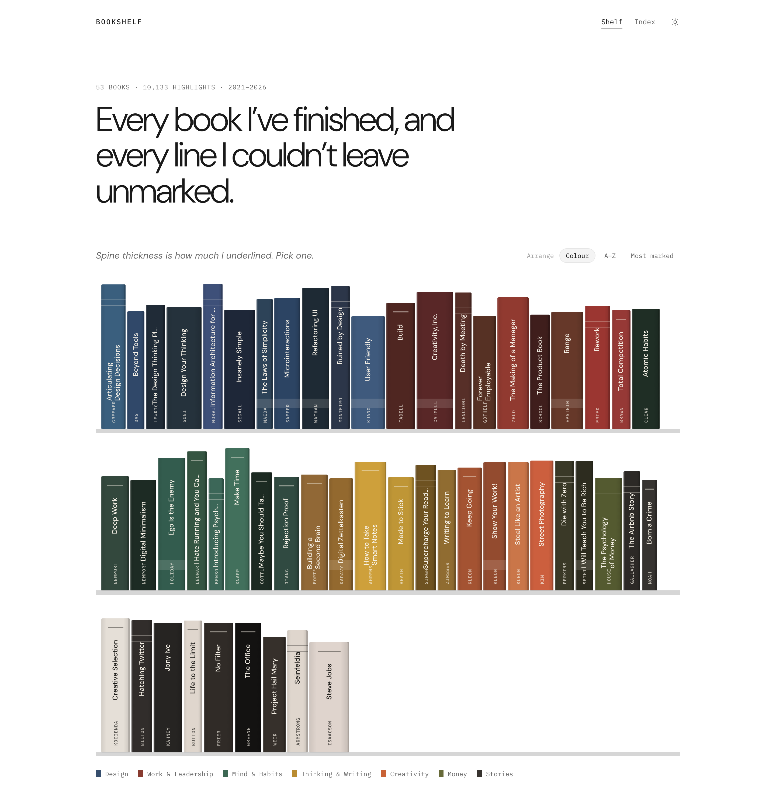
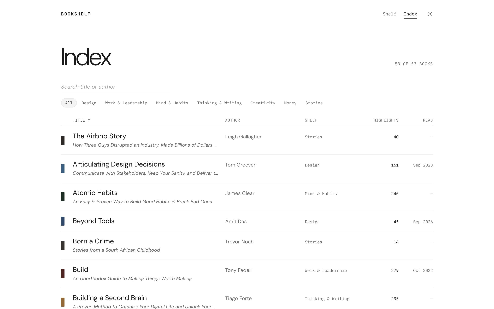
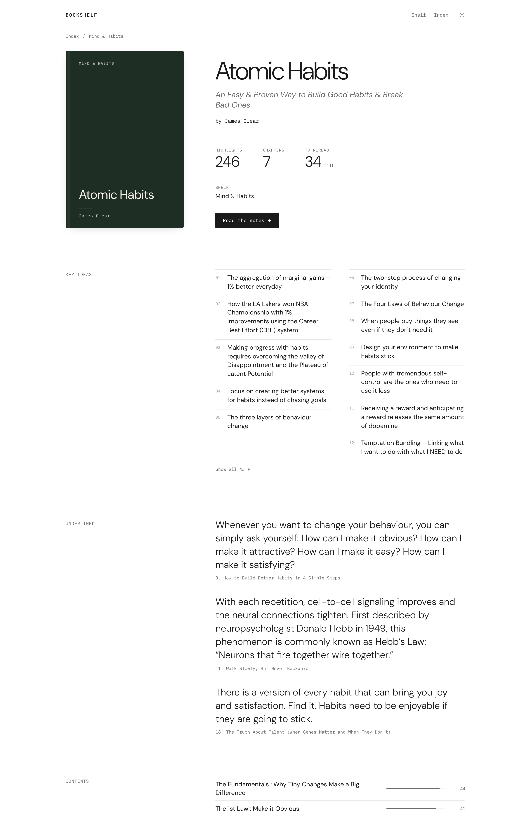
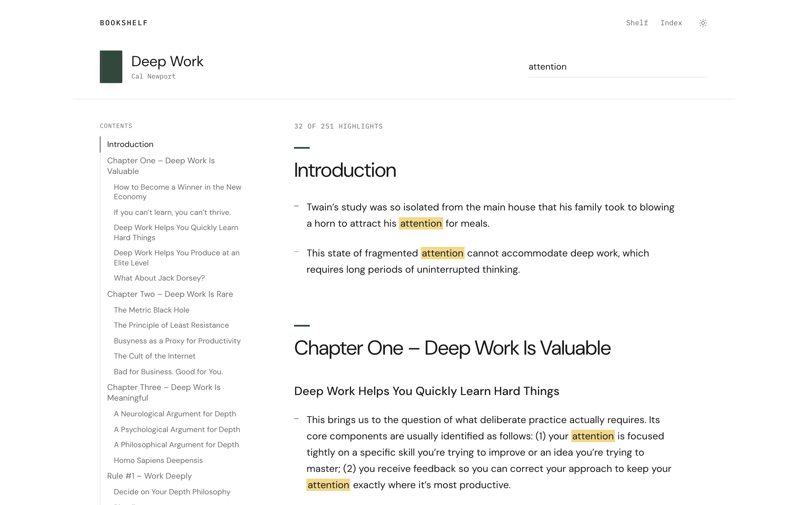
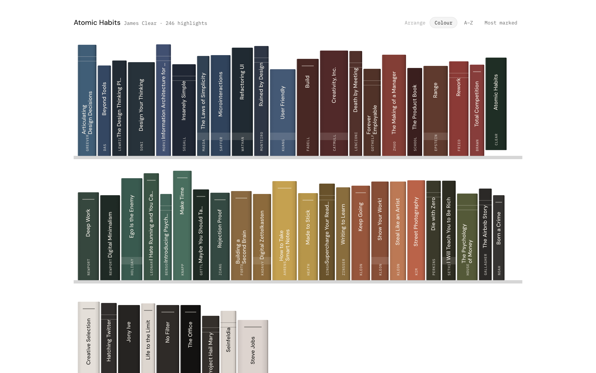
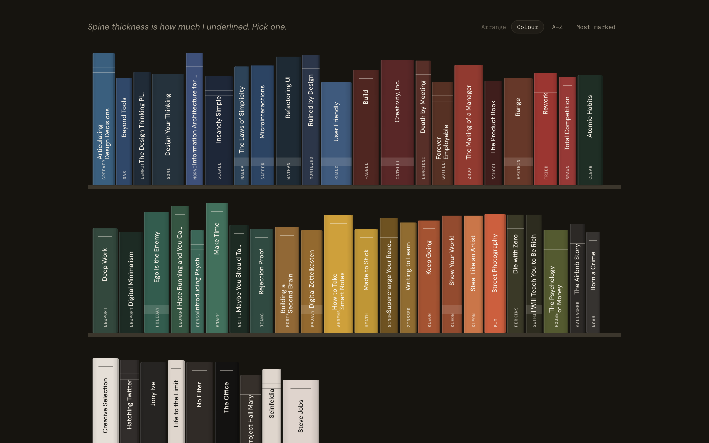
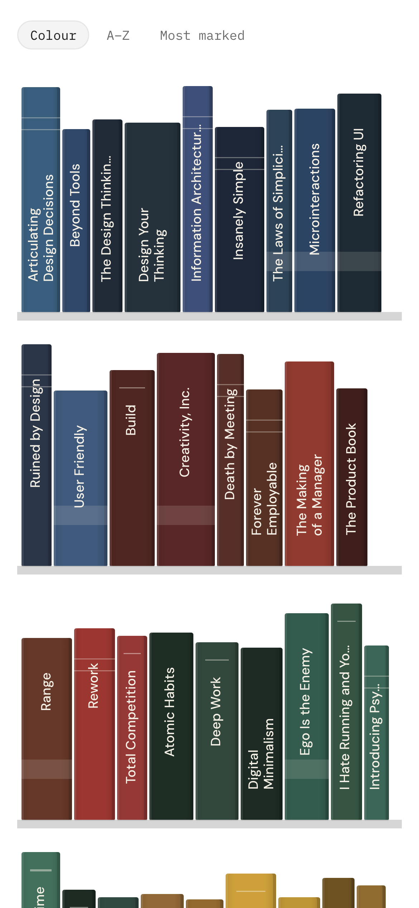
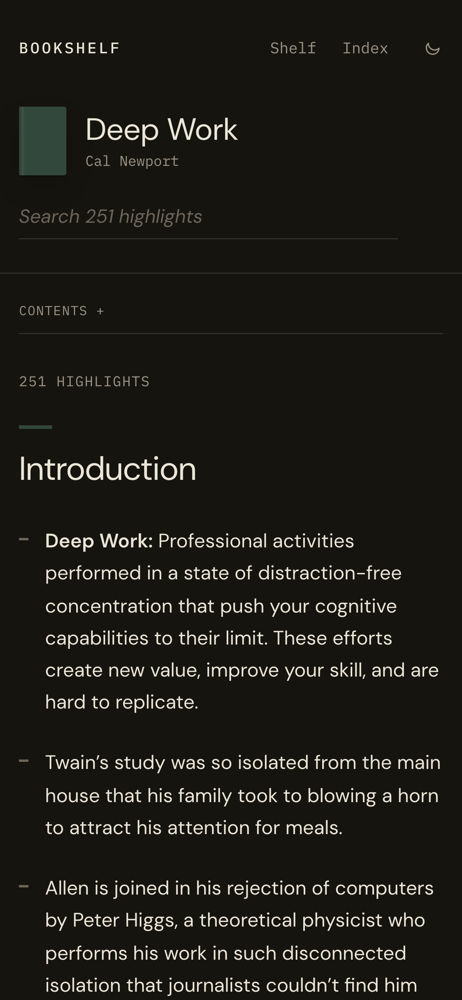

Bookshelf
01 — The raw material
markdown files
Five years of Kindle highlights, exported into Obsidian. Some books as one file, some as a folder per chapter.
02 — Read in the browser
Atomic Habits · notes.md
On the site
Habits are the compound interest of self-improvement.
You do not rise to the level of your goals. You fall to the level of your systems.
What came out
126 chapter files stitched · 2021–2026
03 — The shelf
Hover to name a book. Arrange by colour, A–Z or most marked.

04 — The index
Search by title or author, filter by shelf, sort by highlights.

05 — A page per book
Each chapter shows how much of it I marked.

06 — The notes
Search as you type — matches light up in place.

07 — Anywhere




No build step · No database
Bookshelf
Every line I couldn’t leave unmarked